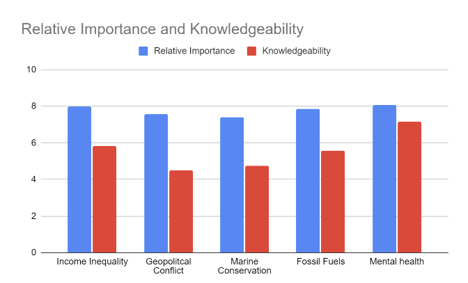

Marine Conservation Survey Analysis
Sea Through Blind Eyes: What fate might social priorities spell for the world’s oceans?

Sea Through Blind Eyes: What fate might social priorities spell for the world’s oceans?
Some 3.7 billion years in the past, the earliest known lifeforms swirled about the depths of the primordial Earth’s oceans. These minute and simple creatures were the pioneers of life as we have come to understand it, defining the frontier of evolution for hundreds of millions of years. Throughout their long and relatively lonesome sole occupation of our young planet, some such microbes slowly terraformed the Earth, gradually oxygenating the atmosphere through photosynthesis, ultimately allowing for some of the most consequential increases in biodiversity in Earth’s history. Even after the first multicellular life developed in the ocean, it would be millions more years before complex life began to colonize land. A not-so-quick jump to the present day and here we are, a biological and evolutionary miracle, a system of living chemistry born of stardust and molded by nature for more than a quarter of the known universe’s life thus far. The lives that we all lead are thus inextricably linked to the swirling seas that were the stage for the genesis of life as we understand it.
Even if you don’t feel this far-reaching, generational connection to our world’s oceans, there is no denying how interwoven the sea is in our lives. For some, it’s in the salty air that twists your nose in the early morning, or in the grains of sand that you’re somehow still finding in your bed sheets or the bottom of your backpack. For others, it’s in our storefront windows, on our menus, in our stomachs, and a means of making ends meet. As the human population has steadily grown in recent times and the world has become increasingly industrialized, modernized, and preoccupied with seemingly endless other endeavors, the strain of a collectively extractive relationship with the world’s oceans has begun to show. Enormous carbon emissions acidify the seas and raise their temperatures, depleting a critical, natural carbon sink bleaching the world’s coral reefs, and contributing to an ever-growing list of endangered species. Major oil spills as recent as November 17, 2023 show that history seems to repeat itself when we refuse to learn from past mistakes. Despite this, the sea continues to provide. Several sources estimate that well over 3 billion people rely on various forms of seafood as an integral component of their diet, and oceanic protein (whether wild-caught or produced from mariculture or other forms of farming) accounts for roughly 15% of global protein intake. There are few signs of this significant reliance upon the ocean as a food source diminishing. On the contrary, there are serious hopes of finding ways to increase the productivity of such food sources to help combat food insecurity and hunger around the globe (Mossler, 2020). These bountiful harvests from the sea along with ambitions of expanding their scale raises the critical question of how we can continue on such a path sustainably.
One would struggle to fully comprehend the far-reaching effects of a critical collapse of oceanic ecology and the delicate balance that it hangs within. Catastrophic knock-on effects echoing through various trophic cascades would spell disaster not just for far more than just those of us that enjoy the beach or all-you-can-eat sushi. Given the critical and deeply interconnected role that our world’s oceans play in the grand scheme of life on this planet, one might assume that it would exist as a highly prioritized issue in the modern zeitgeist. Our team has found evidence that could suggest otherwise.
In a survey of 145 UCSD undergraduate college students, respondents were asked to rate both their knowledgeability regarding a given topic/modern global issue and their subjective perception of the issue’s relative importance on a scale of 1-10. The five global issues provided to the respondents were as follows: Rising Income Inequality, Geopolitical Conflict, Reliance upon Fossil Fuels, Mental Health, and Marine Conservation. Of the five listed topics, marine conservation ranked the lowest in terms of the respondents’ subjective evaluation of the issue’s global significance with an average rating of 7.38. Respondents’ average rating of their own knowledgeability pertaining to the issue of marine conservation (4.75) ranked notably lower than issues such as mental health (7.14) or rising income inequality (5.82).
Figure 1.1 - Table of average relative importance and personal knowledgeability of global issues reported by 145 UCSD undergraduate students (scale 1-10).
Figure 1.2 - Graph of average relative importance and personal knowledgeability of global issues reported by 145 UCSD undergraduate students (scale 1-10).
The 145 undergraduate respondents appear to not hold the issue of global marine conservation in equal standing with other hot-button topics. Without definitively extending these results from a relatively small sample size in a self-report survey to the broader public, it is not unreasonable to state that these data suggest a potential trend in marine conservation both being viewed as less pressing and being less understood as an issue. Such an interpretation of these data is not meant to diminish the importance of other global issues, but rather serves as an explanation of a further source of purpose for our department in impressing the significance of marine conservation upon our peers and beyond.
The generation containing these undergraduate college students is soon to inherit a world with a host of troubles. When faced with many complex problems, the question of where to devote societal attention, resources, and remedial efforts becomes one of potent importance. It is said that “the squeaky wheel gets the grease”. Then, how can we expect to protect, preserve, and (*optimistic thinking*) even heal our oceans if it ranks so low in the hierarchy of social importance? Beyond that, the staggeringly low scores provided by respondents rating how well-informed or knowledgeable they believe themselves to be regarding marine conservation begs the question of whether or not the appropriate scientific or conservationist communities are doing the issue justice with informative and in-depth coverage. We are left wondering what the root cause of this disconnect is. How can such an undeniably important part of our world be so seemingly undervalued compared to other problems? Perhaps these respondents suffer from a lack of personal connection to or experience with the ocean and thus struggle to perceive it as a significant entity in their lives. Though, one might postulate that being students at a university so close to the ocean and with a rich history in studies of marine ecology and conservation efforts, these respondents could have been biased to overstate the importance of marine conservation relative to the general populace. Were this to be the case, could a broader study reveal an even lower level of prioritization of the issue? Perhaps the respondents are simply limited by which issues receive the most public and persistent attention from major media outlets and sources of information. So are the world’s oceans paying the price for not being sufficiently linked to the sensationalization of modern media? Are we dooming the seas to a gradual demise simply because their stories do not make the headlines or do not drum up enough profit for popular media sources to platform the issues?
My peers and I formed the Department of Operations in Conservational Studies with the goal of not only better understanding the nature of this apparent deprioritization of marine conservation relative to other contemporary issues, but also with the purpose of combating this trend by both impressing the significance of marine conservation upon our audience and providing both firsthand and research-backed education on various facets of the overarching topic. We surveyed our undergraduate student body not because of the sample’s accessibility to us as researchers, but because these respondents represent the next generation of academics, educators, policymakers, parents, and more. We are daunted by the question of, ‘if these individuals don’t care about marine conservation as much as other issues, then who does?’ And what does the future hold for the world’s oceans and the many aspects of global society that they inextricably affect?
Such questions are those that we have embarked to investigate and inspire others to ponder. The goal of helping to bring about a more well-informed society that is astutely aware of the significance of marine conservation as it pertains not only to their own lives but larger systems of global impact is a foundational driving force behind our work. Beyond inspiring and educating our immediate audience, it is our hope as a department that the impact of our work, no matter the scale that it ultimately realizes, can be carried on by others that one day will enter in our stead, and by those that our work reaches. On a grander scale, our efforts are centered around the ideal in which all seriously impactful issues are recognized as legitimate, prioritized in their own right, and effortfully approached with a goal of resolution.
Take heed of these findings and ask yourself if there are certain global issues that you give less attention to or associate with lesser significance. Finally, ask yourself if you can find just enough space in your mind and heart to care just a bit more.
__________________________________________________________________________________________________________